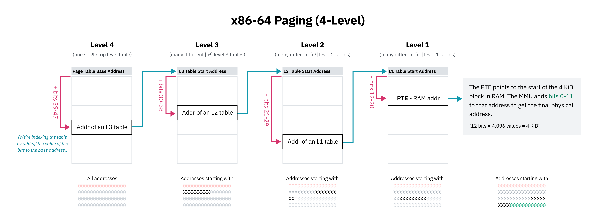

A lot of content courtesy of cpu.land written by the wonderful Kognise!
CPUs
The central processing unit (CPU) of a computer is in charge of all computation.
It works by taking a list of instructions and executing them one-by-one. After executing each instruction, the CPU moves the pointer and repeats.
An instruction is made up of a bunch of binary data that looks like this in descending levels of abstraction:
add ebx, 10(Assembly)0x83 0xC3 0x0A(Machine Code - hex)10000011 11000011 00001010(Machine Code - binary)
Generally, the first byte (0x83) in the example above, corresponds to the opcode which represents that actual operation and the rest of the bytes are the arguments.
The CPU stores an instruction pointer (called the program counter) which points to the location in memory where it’s going to fetch the next instruction. Most instructions, after they are executing, just move the instruction pointer to the very next instruction, but some instructions (like the jmp instruction) can jump to different places depending on certain conditions (e.g. a value in a specific register or whether one value is positive or negative).
Registers and Memory
Registers are small storage buckets that are extremely fast for the CPU to read and write from. These are often very limited (most CPUs only have a handful) so your computer also has various other levels of storage in the form of memory that get progressively slower but higher capacity the more you move away from the CPU.
See also: latency numbers for various levels of memory access.
Roughly:
- Register read/write: ~0.1ns latency and ~16 bits of capacity
- L1 cache: ~0.5ns latency and ~32KB of capacity
- L2 cache: ~7ns latency and ~4MB of capacity
- Main memory (RAM): ~100ns latency and ~8GB of capacity
Isolating memory
It turns out that when the CPU reads from or writes to a memory address, it’s not actually referring to that location in physical memory (RAM). Rather, it’s pointing to a location in virtual memory space.
The CPU talks to a chip called a memory management unit (MMU). The MMU works like a translator with a dictionary that translates locations in virtual memory to locations in RAM.
When the computer first boots up, memory accesses go directly to physical RAM. Immediately after startup, the OS creates the translation dictionary (called the page table) and tells the CPU to start using the MMU.
These pages are always a fixed size and each processor architecture has a different page size. x86-64, for example, has a default 4 KiB page size.
This is how each process can have its own isolated memory space — when the OS switches context from one process to another, an important task is remapping the virtual memory space to a different area in physical memory and allows code and data that refer to memory addresses use the same addresses that get remapped to different physical memory locations.
Page tables are often hierarchical:

If an instruction for example asks for an address that the MMU doesn’t know about, it can fail the memory access with a page fault. Then, the page fault interrupt handler can then load the data into memory and let the MMU try again.
This is also what the swap or page file is actually doing under the hood: Operating systems can free up physical memory by writing memory pages to disk and then removing them from physical memory but keeping them in virtual memory with the present flag set to 0. If that virtual memory is read, the OS can then restore the memory from disk to RAM and set the present flag back to 1.
Kernel
The kernel is the core of the operating system. When you boot up your computer, the instruction pointer starts at a program somewhere. That program is the kernel. The kernel has near-full access to your computer’s memory, peripherals, and other resources, and is in charge of running software installed on your computer (known as userland programs).
Processor Mode
The mode (sometimes called privilege level or ring) a processor is in controls what it’s allowed to do.
- Kernel mode: CPU can do anything and access any memory
- User mode: only subset of instructions are allowed and memory is limited (this is also why you get segmentation faults if you try to read outside of your allowed memory space!)
Processors start in kernel mode. Before executing a program, the kernel initiates the switch to user mode.
Syscalls
Programs run in user mode because they can’t be trusted with full access to the computer. But programs also need a way to do privileged things like access I/O, allocate memory, etc.
A system call is a special procedure that lets a program start a transition from user space to kernel space, jumping from the program’s code into OS code.
Interrupts
When the processor receives an interrupt signal INT, it drops everything it is currently doing and handles the interrupt. Every software interrupt signal is associated with a particular interrupt handler in the interrupt vector table (or IVT).
Some syscalls take arguments. These arguments are normally passed by placing data in certain registers.
After the kernel finishes handling the interrupt, it uses an instruction IRET to return back to the instruction pointer it was at before it got interrupted.
Multitasking and Parallelism
We can fake parallelism by letting processes take turns on the CPU.
We can do this by programming a timer chip to trigger a switch to an OS interupt handler after a certain amount of time passes.
OS schedulers use timer chips like PITs to trigger hardware interrupts for multitasking:
- Before jumping to program code, the OS sets the timer chip to trigger an interrupt after some period of time (this period of time is called the timeslice)
- The OS switches to user mode and jumps to the next instruction of the program and the program does its thing
- When the timer elapses, it triggers a hardware interrupt to switch to kernel mode and jump back to OS code
- The OS can now save where the program left off, load a different program, and repeat the process
This is called preemptive multitasking; the interruption of a process is called preemption.
There are a few strategies to determine the timeslice that each process gets:
- Fixed timeslice round-robin: every process gets the same timeslice (e.g. 10ms)
- Dynamic timeslice round-robin: divide a target latency equally among all processes (e.g. with a target latency of 15 ms and 10 processes, each process would get 15/10 or 1.5 ms to run). Note: too small a timeslice can result in performance problems with processes switching too rapidly. Timeslice duration can be given a lower bound (minimum granularity)
- Completely Fair Scheduler
ELFs
Executable and linkable format. The structure is roughly as follows:
- ELF Header: basic information and where’s what (like the PHT and SHT). Also points to where the ‘entrypoint’ is.
- Program Header Table (PHT): series of entries that describes how and where to load the ELF file’s data into memory. Common header types:
PT_LOAD: load into memoryPT_NOTE: free form informational text (i.e. copyright notices, version info, etc.)PT_DYNAMIC: info about dynamic linkingPT_INTERP: path to the location of an ‘ELF interpreter’
- Section Header Table (SHT): optional map of the data to assist in debugging. Common sections are:
.text: machine code.data: hard coded data (e.g. global variable, statics, embedded binaries/images/other things).rodata: read-only.data
- Data: all of the actual code and data packed together.
Linking
Programmers tend to build their programs on top of libraries of reusable code — for example, libc, which we talked about earlier.
- Static linking: library functions are copied from the developer’s computer into each binary at build time
- Dynamic linking: binaries reference the names of library functions which are loaded from the user’s computer at runtime (these are typicaly packaged into files with
.so,.dllor.dylibfile extensions)